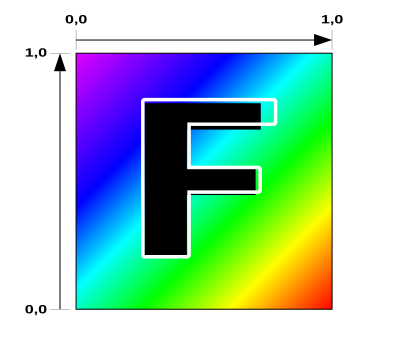

Este artículo es parte de una serie sobre las diversas formas de proporcionar datos a un shader. Cada uno se basa en la lección anterior, por lo que te resultará más fácil entenderlos si los lees en orden.
En este artículo cubriremos los fundamentos de las texturas. En artículos anteriores cubrimos las otras formas principales de pasar datos a un shader. Estas fueron las variables inter-etapa (inter-stage variables), los uniforms, los storage buffers y los vertex buffers. La última forma principal de pasar datos a un shader son las texturas.
Las texturas representan con mayor frecuencia una imagen 2D. Una imagen 2D es solo un array 2D de valores de color, por lo que te preguntarás, ¿por qué necesitamos texturas para arrays 2D? Podríamos usar simplemente storage buffers como arrays 2D. Lo que hace especiales a las texturas es que pueden ser accedidas por un hardware especial llamado sampler. Un sampler puede leer hasta 16 valores diferentes en una textura y mezclarlos entre sí de una manera que es útil para muchos casos de uso comunes.
Como ejemplo, digamos que quiero dibujar una imagen 2D más grande que su tamaño original.
Si simplemente tomamos un solo píxel de la imagen original para crear cada píxel de la imagen más grande, terminaremos con el primer ejemplo a continuación. Si en cambio, para un píxel dado en la imagen más grande consideramos múltiples píxeles de la imagen original, podemos obtener resultados como la segunda imagen a continuación, que con suerte debería verse menos pixelada.
Aunque existen funciones WGSL que obtienen un píxel individual de una textura y hay casos de uso para ello, esas funciones no son tan interesantes porque podríamos hacer lo mismo con storage buffers. Las funciones WGSL interesantes para las texturas son las que filtran y mezclan múltiples píxeles.
Estas funciones WGSL toman una textura que representa esos datos, un sampler que representa cómo queremos extraer los datos de la textura, y una coordenada de textura (texture coordinate) que especifica de dónde queremos obtener un valor de la textura.
Las coordenadas de textura para texturas muestreadas van de 0.0 a 1.0 a lo ancho y a lo largo de una textura, independientemente del tamaño real de la misma. [1]
Tomemos uno de nuestros ejemplos del artículo sobre variables inter-etapa y modifiquémoslo para dibujar un cuadrilátero (quad, compuesto por 2 triángulos) con una textura.
struct OurVertexShaderOutput {
@builtin(position) position: vec4f,
- @location(0) color: vec4f,
+ @location(0) texcoord: vec2f,
};
@vertex fn vs(
@builtin(vertex_index) vertexIndex : u32
) -> OurVertexShaderOutput {
- let pos = array(
- vec2f( 0.0, 0.5), // centro arriba
- vec2f(-0.5, -0.5), // abajo izquierda
- vec2f( 0.5, -0.5) // abajo derecha
- );
- var color = array<vec4f, 3>(
- vec4f(1, 0, 0, 1), // rojo
- vec4f(0, 1, 0, 1), // verde
- vec4f(0, 0, 1, 1), // azul
- );
+ let pos = array(
+ // 1er triángulo
+ vec2f( 0.0, 0.0), // centro
+ vec2f( 1.0, 0.0), // derecha, centro
+ vec2f( 0.0, 1.0), // centro, arriba
+
+ // 2do triángulo
+ vec2f( 0.0, 1.0), // centro, arriba
+ vec2f( 1.0, 0.0), // derecha, centro
+ vec2f( 1.0, 1.0), // derecha, arriba
+ );
var vsOutput: OurVertexShaderOutput;
- vsOutput.position = vec4f(pos[vertexIndex], 0.0, 1.0);
- vsOutput.color = color[vertexIndex];
+ let xy = pos[vertexIndex];
+ vsOutput.position = vec4f(xy, 0.0, 1.0);
+ vsOutput.texcoord = xy;
return vsOutput;
}
+@group(0) @binding(0) var ourSampler: sampler;
+@group(0) @binding(1) var ourTexture: texture_2d<f32>;
@fragment fn fs(fsInput: OurVertexShaderOutput) -> @location(0) vec4f {
- return fsInput.color;
+ return textureSample(ourTexture, ourSampler, fsInput.texcoord);
}
Arriba cambiamos de 3 vértices que dibujan un triángulo centrado a 6 vértices que dibujan un cuadrilátero en la esquina superior derecha del canvas.
Cambiamos OurVertexShaderOutput para pasar texcoord, un vec2f, de modo que podamos pasar coordenadas de textura al fragment shader (shader de fragmentos). Cambiamos el vertex shader (shader de vértices) para establecer vsOutput.texcoord igual que la posición en el espacio de recorte (clip space) que extrajimos de nuestro array de posiciones estáticas. vsOutput.texcoord se interpolará entre los 3 vértices de cada triángulo cuando se pase al fragment shader.
Luego declaramos un sampler y una textura y los referenciamos en nuestro fragment shader. La función textureSample muestrea una textura. El primer parámetro es la textura a muestrear. El segundo parámetro es el sampler para especificar cómo muestrear la textura. El tercero es la coordenada de textura para saber dónde muestrear.
Nota: No es común pasar valores de posición como coordenadas de textura, pero en este caso particular de un cuadrilátero unitario (un cuadrilátero de una unidad de ancho y una unidad de alto) resulta que las coordenadas de textura que necesitamos coinciden con las posiciones. Hacerlo de esta manera mantiene el ejemplo más pequeño y simple. Sería mucho más común proporcionar coordenadas de textura a través de vertex buffers.
Ahora necesitamos crear los datos de la textura. Haremos una F de 5x7 téxeles (texels) [2].
const kTextureWidth = 5;
const kTextureHeight = 7;
const _ = [255, 0, 0, 255]; // rojo
const y = [255, 255, 0, 255]; // amarillo
const b = [ 0, 0, 255, 255]; // azul
const textureData = new Uint8Array([
b, _, _, _, _,
_, y, y, y, _,
_, y, _, _, _,
_, y, y, _, _,
_, y, _, _, _,
_, y, _, _, _,
_, _, _, _, _,
].flat());
Con suerte puedes ver la F allí, así como un téxel azul en la esquina superior izquierda (el primer valor).
Vamos a crear una textura rgba8unorm. rgba8unorm significa que la textura tendrá valores de rojo, verde, azul y alfa. Cada valor será de 8 bits sin signo y se normalizará cuando se use en la textura. unorm significa normalizado sin signo (unsigned normalized), que es una forma elegante de decir que el valor se convertirá de un byte sin signo con valores de (0 a 255) a un valor de punto flotante con valores de (0.0 a 1.0).
En otras palabras, si el valor que ponemos en la textura es [64, 128, 192, 255], el valor en el shader terminará siendo [64 / 255, 128 / 255, 192 / 255, 255 / 255] o, dicho de otra forma, [0.25, 0.50, 0.75, 1.00].
Ahora que tenemos los datos, necesitamos crear una textura.
const texture = device.createTexture({
size: [kTextureWidth, kTextureHeight],
format: 'rgba8unorm',
usage: GPUTextureUsage.TEXTURE_BINDING | GPUTextureUsage.COPY_DST,
});
En device.createTexture, el parámetro size debería ser bastante obvio. El formato es rgba8unorm como se mencionó anteriormente. Para el usage, GPUTextureUsage.TEXTURE_BINDING indica que queremos poder vincular esta textura en un bind group [3] y COPY_DST significa que queremos poder copiar datos a ella.
A continuación, necesitamos hacer precisamente eso y copiar nuestros datos a ella.
device.queue.writeTexture(
{ texture },
textureData,
{ bytesPerRow: kTextureWidth * 4 },
{ width: kTextureWidth, height: kTextureHeight },
);
En device.queue.writeTexture, el primer parámetro es la textura que queremos actualizar. El segundo son los datos que queremos copiar a ella. El tercero define cómo leer esos datos al copiarlos a la textura. bytesPerRow especifica cuántos bytes obtener de una fila de los datos de origen a la siguiente fila. Finalmente, el último parámetro especifica el tamaño de la copia.
También necesitamos crear un sampler.
const sampler = device.createSampler();
Necesitamos añadir tanto la textura como el sampler a un bind group con bindings que coincidan con los @binding(?) que pusimos en el shader.
const bindGroup = device.createBindGroup({
layout: pipeline.getBindGroupLayout(0),
entries: [
{ binding: 0, resource: sampler },
{ binding: 1, resource: texture },
],
});
Para actualizar nuestro renderizado, necesitamos especificar el bind group y dibujar 6 vértices para renderizar nuestro cuadrilátero que consta de 2 triángulos.
const pass = encoder.beginRenderPass(renderPassDescriptor);
pass.setPipeline(pipeline);
+ pass.setBindGroup(0, bindGroup);
- pass.draw(3); // llama a nuestro vertex shader 3 veces
+ pass.draw(6); // llama a nuestro vertex shader 6 veces
pass.end();
Y al ejecutarlo obtenemos esto:
¿Por qué la F está al revés?
Si regresas y consultas el diagrama de coordenadas de textura de nuevo, verás que la coordenada de textura 0,0 hace referencia al primer téxel de la textura. La posición en el centro del canvas de nuestro cuadrilátero es 0,0 y usamos ese valor como coordenada de textura, por lo que está haciendo lo que muestra el diagrama: una coordenada de textura 0,0 hace referencia al primer téxel azul.
Para solucionar esto, existen 2 soluciones comunes.
Invertir las coordenadas de textura
En este ejemplo, podríamos cambiar la coordenada de textura ya sea en el vertex shader:
- vsOutput.texcoord = xy; + vsOutput.texcoord = vec2f(xy.x, 1.0 - xy.y);
o en el fragment shader:
- return textureSample(ourTexture, ourSampler, fsInput.texcoord); + let texcoord = vec2f(fsInput.texcoord.x, 1.0 - fsInput.texcoord.y); + return textureSample(ourTexture, ourSampler, texcoord);
Por supuesto, si estuviéramos suministrando coordenadas de textura a través de vertex buffers o storage buffers, lo ideal sería invertirlas en el origen.
Invertir los datos de la textura
const textureData = new Uint8Array([ - b, _, _, _, _, - _, y, y, y, _, - _, y, _, _, _, - _, y, y, _, _, - _, y, _, _, _, - _, y, _, _, _, - _, _, _, _, _, + _, _, _, _, _, + _, y, _, _, _, + _, y, _, _, _, + _, y, y, _, _, + _, y, _, _, _, + _, y, y, y, _, + b, _, _, _, _, ].flat());
Una vez que hemos invertido los datos, lo que antes estaba en la parte superior ahora está en la parte inferior, y el píxel inferior izquierdo de la imagen original es ahora el primer dato en la textura y se convierte en lo que la coordenada de textura 0,0 referencia. Es por esto que a menudo se considera que las coordenadas de textura van de 0 en la parte inferior a 1 en la parte superior.

Invertir los datos es lo suficientemente común como para que existan opciones al cargar texturas desde imágenes, videos y canvases para invertir los datos por ti.
En el ejemplo anterior usamos un sampler con su configuración por defecto. Dado que estamos dibujando la textura de 5x7 más grande que sus 5x7 téxeles originales, el sampler utiliza lo que se llama magFilter (filtro de magnificación). Si lo cambiamos de nearest (más cercano) a linear (lineal), entonces interpolará linealmente entre 4 píxeles.
Las coordenadas de textura a menudo se llaman “UV” (pronunciado u-ve), así que, en el diagrama anterior, uv es la coordenada de textura. Para un uv dado, se eligen los 4 píxeles más cercanos. t1 es la distancia horizontal entre el centro del píxel superior izquierdo elegido y el centro del píxel a su derecha, donde 0 significa que estamos horizontalmente en el centro del píxel izquierdo y 1 significa que estamos horizontalmente en el centro del píxel derecho elegido. t2 es similar, pero verticalmente.
t1 se utiliza para “mezclar” (mix) entre los 2 píxeles superiores para producir un color intermedio. mix interpola linealmente entre 2 valores, por lo que cuando t1 es 0 obtenemos solo el primer color. Cuando t1 = 1 obtenemos solo el segundo color. Los valores entre 0 y 1 producen una mezcla proporcional. Por ejemplo, 0.3 sería el 70% del primer color y el 30% del segundo. De manera similar, se calcula un segundo color intermedio para los 2 píxeles inferiores. Finalmente, t2 se utiliza para mezclar los dos colores intermedios en un color final.
Otra cosa a notar: en la parte inferior del diagrama hay 2 configuraciones más del sampler, addressModeU y addressModeV. Podemos establecer estos en repeat (repetir) o clamp-to-edge (ajustar al borde) [4]. Cuando se establece en repeat, si nuestra coordenada de textura está a menos de medio téxel del borde de la textura, “volvemos a empezar” y mezclamos con píxeles en el lado opuesto de la textura. Cuando se establece en clamp-to-edge, para calcular qué color devolver, la coordenada de textura se ajusta para que no pueda entrar en el último medio téxel de cada borde. Esto tiene el efecto de mostrar los colores del borde para cualquier coordenada de textura fuera de ese rango.
Actualicemos el ejemplo para poder dibujar el cuadrilátero con todas estas opciones.
Primero, creemos un sampler para cada combinación de ajustes. También crearemos un bind group que use ese sampler.
+ const bindGroups = [];
+ for (let i = 0; i < 8; ++i) {
- const sampler = device.createSampler();
+ const sampler = device.createSampler({
+ addressModeU: (i & 1) ? 'repeat' : 'clamp-to-edge',
+ addressModeV: (i & 2) ? 'repeat' : 'clamp-to-edge',
+ magFilter: (i & 4) ? 'linear' : 'nearest',
+ });
const bindGroup = device.createBindGroup({
layout: pipeline.getBindGroupLayout(0),
entries: [
{ binding: 0, resource: sampler },
{ binding: 1, resource: texture },
],
});
+ bindGroups.push(bindGroup);
+ }
Crearemos algunos ajustes iniciales:
const settings = {
addressModeU: 'repeat',
addressModeV: 'repeat',
magFilter: 'linear',
};
y en el momento del renderizado miraremos los ajustes para decidir qué bind group usar.
function render() {
+ const ndx = (settings.addressModeU === 'repeat' ? 1 : 0) +
+ (settings.addressModeV === 'repeat' ? 2 : 0) +
+ (settings.magFilter === 'linear' ? 4 : 0);
+ const bindGroup = bindGroups[ndx];
...
Ahora todo lo que necesitamos hacer es proporcionar algo de interfaz de usuario (UI) que nos permita cambiar los ajustes y, cuando cambien, volver a renderizar. Estoy usando una librería llamada “muigui” que actualmente tiene una API similar a dat.GUI.
import GUI from '../3rdparty/muigui-0.x.module.js';
...
const settings = {
addressModeU: 'repeat',
addressModeV: 'repeat',
magFilter: 'linear',
};
const addressOptions = ['repeat', 'clamp-to-edge'];
const filterOptions = ['nearest', 'linear'];
const gui = new GUI();
gui.onChange(render);
Object.assign(gui.domElement.style, {right: '', left: '15px'});
gui.add(settings, 'addressModeU', addressOptions);
gui.add(settings, 'addressModeV', addressOptions);
gui.add(settings, 'magFilter', filterOptions);
El código anterior declara settings y luego crea una UI para establecerlos y llama a render cuando cambian.
Dado que nuestro fragment shader recibe coordenadas de textura interpoladas, a medida que el shader llama a textureSample con esas coordenadas, obtiene diferentes colores mezclados según se le pida proporcionar un color para cada píxel que se está renderizando. Observa cómo con los modos de direccionamiento establecidos en repeat podemos ver que WebGPU está “muestreando” de los téxeles en el lado opuesto de la textura.
También hay un ajuste, minFilter (filtro de minificación), que realiza cálculos matemáticos similares a magFilter para cuando la textura se dibuja a un tamaño menor que el original. Cuando se establece en linear, también elige 4 píxeles y los mezcla siguiendo una lógica similar a la anterior.
El problema es que, al elegir 4 píxeles mezclados de una textura más grande para renderizar, por ejemplo, 1 solo píxel, el color cambiará y obtendremos parpadeo (flickering).
Hagámoslo para que podamos ver el problema.
Primero, hagamos que nuestro canvas tenga baja resolución. Para hacer esto, necesitamos actualizar nuestro CSS para que el navegador no aplique el mismo efecto de magFilter: 'linear' en nuestro canvas. Podemos hacerlo configurando el CSS de la siguiente manera:
canvas {
display: block; /* hacer que el canvas actúe como un bloque */
width: 100%; /* hacer que el canvas ocupe todo su contenedor */
height: 100%;
+ image-rendering: pixelated;
+ image-rendering: crisp-edges;
}
A continuación, bajemos la resolución del canvas en nuestra función de callback de ResizeObserver:
const observer = new ResizeObserver(entries => {
for (const entry of entries) {
const canvas = entry.target;
- const width = entry.contentBoxSize[0].inlineSize;
- const height = entry.contentBoxSize[0].blockSize;
+ const width = entry.contentBoxSize[0].inlineSize / 64 | 0;
+ const height = entry.contentBoxSize[0].blockSize / 64 | 0;
canvas.width = Math.max(1, Math.min(width, device.limits.maxTextureDimension2D));
canvas.height = Math.max(1, Math.min(height, device.limits.maxTextureDimension2D));
// volver a renderizar
render();
}
});
observer.observe(canvas);
Vamos a mover y escalar el cuadrilátero, así que añadiremos un uniform buffer (buffer de uniformes) igual que hicimos en el primer ejemplo del artículo sobre uniforms.
struct OurVertexShaderOutput {
@builtin(position) position: vec4f,
@location(0) texcoord: vec2f,
};
+struct Uniforms {
+ scale: vec2f,
+ offset: vec2f,
+};
+
+@group(0) @binding(2) var<uniform> uni: Uniforms;
@vertex fn vs(
@builtin(vertex_index) vertexIndex : u32
) -> OurVertexShaderOutput {
let pos = array(
// 1er triángulo
vec2f( 0.0, 0.0), // centro
vec2f( 1.0, 0.0), // derecha, centro
vec2f( 0.0, 1.0), // centro, arriba
// 2do triángulo
vec2f( 0.0, 1.0), // centro, arriba
vec2f( 1.0, 0.0), // derecha, centro
vec2f( 1.0, 1.0), // derecha, arriba
);
var vsOutput: OurVertexShaderOutput;
let xy = pos[vertexIndex];
- vsOutput.position = vec4f(xy, 0.0, 1.0);
+ vsOutput.position = vec4f(xy * uni.scale + uni.offset, 0.0, 1.0);
vsOutput.texcoord = xy;
return vsOutput;
}
@group(0) @binding(0) var ourSampler: sampler;
@group(0) @binding(1) var ourTexture: texture_2d<f32>;
@fragment fn fs(fsInput: OurVertexShaderOutput) -> @location(0) vec4f {
return textureSample(ourTexture, ourSampler, fsInput.texcoord);
}
Ahora que tenemos uniforms, necesitamos crear un uniform buffer y añadirlo al bind group.
+ // crear un buffer para los valores de los uniforms
+ const uniformBufferSize =
+ 2 * 4 + // scale son 2 floats de 32 bits (4 bytes cada uno)
+ 2 * 4; // offset son 2 floats de 32 bits (4 bytes cada uno)
+ const uniformBuffer = device.createBuffer({
+ label: 'uniforms para el quad',
+ size: uniformBufferSize,
+ usage: GPUBufferUsage.UNIFORM | GPUBufferUsage.COPY_DST,
+ });
+
+ // crear un typedarray para contener los valores de los uniforms en JavaScript
+ const uniformValues = new Float32Array(uniformBufferSize / 4);
+
+ // desplazamientos a los diversos valores de los uniforms en índices de float32
+ const kScaleOffset = 0;
+ const kOffsetOffset = 2;
const bindGroups = [];
for (let i = 0; i < 8; ++i) {
const sampler = device.createSampler({
addressModeU: (i & 1) ? 'repeat' : 'clamp-to-edge',
addressModeV: (i & 2) ? 'repeat' : 'clamp-to-edge',
magFilter: (i & 4) ? 'linear' : 'nearest',
});
const bindGroup = device.createBindGroup({
layout: pipeline.getBindGroupLayout(0),
entries: [
{ binding: 0, resource: sampler },
{ binding: 1, resource: texture },
+ { binding: 2, resource: uniformBuffer },
],
});
bindGroups.push(bindGroup);
}
Y necesitamos código para establecer los valores de los uniforms y subirlos a la GPU. Vamos a animar esto, por lo que también cambiaremos el código para usar requestAnimationFrame para renderizar continuamente.
function render(time) {
time *= 0.001;
const ndx = (settings.addressModeU === 'repeat' ? 1 : 0) +
(settings.addressModeV === 'repeat' ? 2 : 0) +
(settings.magFilter === 'linear' ? 4 : 0);
const bindGroup = bindGroups[ndx];
+ // calcular una escala que dibujará nuestro quad de espacio de recorte de 0 a 1
+ // como 4x4 píxeles en el canvas.
+ const scaleX = 4 / canvas.width;
+ const scaleY = 4 / canvas.height;
+
+ uniformValues.set([scaleX, scaleY], kScaleOffset); // establecer la escala
+ uniformValues.set([Math.sin(time * 0.25) * 0.8, -0.8], kOffsetOffset); // establecer el desplazamiento
+
+ // copiar los valores de JavaScript a la GPU
+ device.queue.writeBuffer(uniformBuffer, 0, uniformValues);
...
+ requestAnimationFrame(render);
}
+ requestAnimationFrame(render);
const observer = new ResizeObserver(entries => {
for (const entry of entries) {
const canvas = entry.target;
const width = entry.contentBoxSize[0].inlineSize / 64 | 0;
const height = entry.contentBoxSize[0].blockSize / 64 | 0;
canvas.width = Math.max(1, Math.min(width, device.limits.maxTextureDimension2D));
canvas.height = Math.max(1, Math.min(height, device.limits.maxTextureDimension2D));
- // volver a renderizar
- render();
}
});
observer.observe(canvas);
}
El código anterior establece la escala para que dibujemos el cuadrilátero del tamaño de 4x4 píxeles en el canvas. También establece el desplazamiento de -0.8 a +0.8 usando Math.sin para que el cuadrilátero se mueva lentamente de un lado a otro del canvas.
Finalmente, añadamos minFilter a nuestros ajustes y combinaciones:
const bindGroups = [];
- for (let i = 0; i < 8; ++i) {
+ for (let i = 0; i < 16; ++i) {
const sampler = device.createSampler({
addressModeU: (i & 1) ? 'repeat' : 'clamp-to-edge',
addressModeV: (i & 2) ? 'repeat' : 'clamp-to-edge',
magFilter: (i & 4) ? 'linear' : 'nearest',
+ minFilter: (i & 8) ? 'linear' : 'nearest',
});
...
const settings = {
addressModeU: 'repeat',
addressModeV: 'repeat',
magFilter: 'linear',
+ minFilter: 'linear',
};
const addressOptions = ['repeat', 'clamp-to-edge'];
const filterOptions = ['nearest', 'linear'];
const gui = new GUI();
- gui.onChange(render);
Object.assign(gui.domElement.style, {right: '', left: '15px'});
gui.add(settings, 'addressModeU', addressOptions);
gui.add(settings, 'addressModeV', addressOptions);
gui.add(settings, 'magFilter', filterOptions);
+ gui.add(settings, 'minFilter', filterOptions);
function render(time) {
time *= 0.001;
const ndx = (settings.addressModeU === 'repeat' ? 1 : 0) +
(settings.addressModeV === 'repeat' ? 2 : 0) +
- (settings.magFilter === 'linear' ? 4 : 0);
+ (settings.magFilter === 'linear' ? 4 : 0) +
+ (settings.minFilter === 'linear' ? 8 : 0);
Ya no necesitamos llamar a render cuando cambia un ajuste, ya que estamos renderizando constantemente usando requestAnimationFrame (a menudo llamado “rAF”, y este estilo de bucle de renderizado se denomina frecuentemente “rAF loop”).
Puedes ver que el cuadrilátero parpadea y cambia de color. Si el minFilter se establece en nearest, entonces para cada uno de los 4x4 píxeles del cuadrilátero está eligiendo un píxel de nuestra textura. Si lo estableces en linear, realiza el filtrado bilineal que mencionamos antes, pero aún así parpadea.
Una razón es que el cuadrilátero se posiciona con números reales, pero los píxeles son enteros. Las coordenadas de textura se interpolan a partir de los números reales o, mejor dicho, se calculan a partir de ellos.
En el diagrama anterior, el rectángulo rojo representa el cuadrilátero que pedimos a la GPU que dibujara basándose en los valores que devolvemos de nuestro vertex shader. Cuando la GPU dibuja, calcula qué centros de píxeles están dentro de nuestro cuadrilátero (nuestros 2 triángulos). Luego, calcula qué valor de variable inter-etapa interpolado pasar al fragment shader basándose en dónde está el centro del píxel a dibujar en relación con dónde están los puntos originales. En nuestro fragment shader pasamos esa coordenada de textura a la función WGSL textureSample y obtenemos un color muestreado, como mostraba el diagrama anterior. Con suerte, puedes ver por qué los colores parpadean. Puedes ver cómo se mezclan en diferentes colores dependiendo de qué coordenadas UV se calculan para el píxel que se está dibujando.
Las texturas ofrecen una solución a este problema. Se llama mipmapping. Creo (aunque podría estar equivocado) que “mipmap” significa “multi-image-pyramid-map” (mapa de pirámide de múltiples imágenes).
Tomamos nuestra textura y creamos una textura más pequeña que tiene la mitad del tamaño en cada dimensión, redondeando hacia abajo. Luego llenamos la textura más pequeña con colores mezclados de la primera textura original. Repetimos esto hasta llegar a una textura de 1x1. En nuestro ejemplo tenemos una textura de 5x7 téxeles. Dividir por 2 en cada dimensión y redondear hacia abajo nos da una textura de 2x3 téxeles. Tomamos esa y repetimos hasta terminar con una textura de 1x1 téxeles.
Dado un mipmap, podemos pedirle a la GPU que elija un nivel de mip (mip level) más pequeño cuando estemos dibujando algo más pequeño que el tamaño de la textura original. Esto se verá mejor porque ha sido “pre-mezclado” y representa mejor cuál sería el color de la textura al escalarla.
El mejor algoritmo para mezclar los píxeles de un nivel de mip al siguiente es un tema de investigación, así como una cuestión de opinión. Como primera idea, aquí tienes un código que genera cada nivel de mip a partir del anterior mediante filtrado bilineal (como se demostró anteriormente).
const lerp = (a, b, t) => a + (b - a) * t;
const mix = (a, b, t) => a.map((v, i) => lerp(v, b[i], t));
const bilinearFilter = (tl, tr, bl, br, t1, t2) => {
const t = mix(tl, tr, t1);
const b = mix(bl, br, t1);
return mix(t, b, t2);
};
const createNextMipLevelRgba8Unorm = ({data: src, width: srcWidth, height: srcHeight}) => {
// calcular el tamaño del siguiente mip
const dstWidth = Math.max(1, srcWidth / 2 | 0);
const dstHeight = Math.max(1, srcHeight / 2 | 0);
const dst = new Uint8Array(dstWidth * dstHeight * 4);
const getSrcPixel = (x, y) => {
const offset = (y * srcWidth + x) * 4;
return src.subarray(offset, offset + 4);
};
for (let y = 0; y < dstHeight; ++y) {
for (let x = 0; x < dstWidth; ++x) {
// calcular la coordenada de textura del centro del téxel de destino
const u = (x + 0.5) / dstWidth;
const v = (y + 0.5) / dstHeight;
// calcular la misma coordenada en el origen - 0.5 píxeles
const au = (u * srcWidth - 0.5);
const av = (v * srcHeight - 0.5);
// calcular la coordenada del téxel superior izquierdo de origen (no texcoord)
const tx = au | 0;
const ty = av | 0;
// calcular las cantidades de mezcla entre píxeles
const t1 = au % 1;
const t2 = av % 1;
// obtener los 4 píxeles
const tl = getSrcPixel(tx, ty);
const tr = getSrcPixel(tx + 1, ty);
const bl = getSrcPixel(tx, ty + 1);
const br = getSrcPixel(tx + 1, ty + 1);
// copiar el resultado "muestreado" en el destino.
const dstOffset = (y * dstWidth + x) * 4;
dst.set(bilinearFilter(tl, tr, bl, br, t1, t2), dstOffset);
}
}
return { data: dst, width: dstWidth, height: dstHeight };
};
const generateMips = (src, srcWidth) => {
const srcHeight = src.length / 4 / srcWidth;
// rellenar con el primer nivel de mip (nivel base)
let mip = { data: src, width: srcWidth, height: srcHeight, };
const mips = [mip];
while (mip.width > 1 || mip.height > 1) {
mip = createNextMipLevelRgba8Unorm(mip);
mips.push(mip);
}
return mips;
};
Veremos cómo hacer esto en la GPU en otro artículo. Por ahora, podemos usar el código anterior para generar un mipmap.
Pasamos los datos de nuestra textura a la función anterior y nos devuelve un array de datos de niveles de mip. Luego podemos crear una textura con todos los niveles de mip:
const mips = generateMips(textureData, kTextureWidth);
const texture = device.createTexture({
label: 'F amarilla sobre rojo',
+ size: [mips[0].width, mips[0].height],
+ mipLevelCount: mips.length,
format: 'rgba8unorm',
usage:
GPUTextureUsage.TEXTURE_BINDING |
GPUTextureUsage.COPY_DST,
});
mips.forEach(({data, width, height}, mipLevel) => {
device.queue.writeTexture(
{ texture, mipLevel },
data,
{ bytesPerRow: width * 4 },
{ width, height },
);
});
Observa que pasamos mipLevelCount con el número de niveles de mip. WebGPU creará entonces el nivel de mip con el tamaño correcto para cada nivel. Luego copiamos los datos a cada nivel especificando el mipLevel.
Añadamos también un ajuste de escala para que podamos ver el cuadrilátero dibujado a diferentes tamaños.
const settings = {
addressModeU: 'repeat',
addressModeV: 'repeat',
magFilter: 'linear',
minFilter: 'linear',
+ scale: 1,
};
...
const gui = new GUI();
Object.assign(gui.domElement.style, {right: '', left: '15px'});
gui.add(settings, 'addressModeU', addressOptions);
gui.add(settings, 'addressModeV', addressOptions);
gui.add(settings, 'magFilter', filterOptions);
gui.add(settings, 'minFilter', filterOptions);
+ gui.add(settings, 'scale', 0.5, 6);
function render(time) {
...
- const scaleX = 4 / canvas.width;
- const scaleY = 4 / canvas.height;
+ const scaleX = 4 / canvas.width * settings.scale;
+ const scaleY = 4 / canvas.height * settings.scale;
Y con eso, la GPU elige el nivel de mip más pequeño para dibujar y el parpadeo desaparece.
Ajusta la escala y verás que, a medida que el cuadrilátero se hace más grande, el nivel de mip que se utiliza cambia. Hay una transición bastante brusca entre la escala 2.4 y la 2.5, donde la GPU cambia entre el nivel de mip 0 (el más grande) y el nivel de mip 1 (el tamaño medio). ¿Qué podemos hacer al respecto?
Al igual que tenemos un magFilter y un minFilter, los cuales pueden ser nearest o linear, también hay un ajuste mipmapFilter que también puede ser nearest o linear.
Esto elige si mezclamos entre niveles de mip. En mipmapFilter: 'linear', los colores se muestrean de 2 niveles de mip, ya sea con filtrado nearest o linear basándose en los ajustes anteriores, y luego esos 2 colores se vuelven a mezclar (mix) de forma similar.
Esto surge sobre todo al dibujar cosas en 3D. Cómo dibujar en 3D se cubre en otros artículos, así que no voy a tratarlo aquí, pero cambiaremos nuestro ejemplo anterior para mostrar algo de 3D de modo que podamos ver mejor cómo funciona mipmapFilter.
Primero, creemos algunas texturas. Haremos una textura de 16x16 que creo que mostrará mejor el efecto de mipmapFilter.
const createBlendedMipmap = () => {
const w = [255, 255, 255, 255];
const r = [255, 0, 0, 255];
const b = [ 0, 28, 116, 255];
const y = [255, 231, 0, 255];
const g = [ 58, 181, 75, 255];
const a = [ 38, 123, 167, 255];
const data = new Uint8Array([
w, r, r, r, r, r, r, a, a, r, r, r, r, r, r, w,
w, w, r, r, r, r, r, a, a, r, r, r, r, r, w, w,
w, w, w, r, r, r, r, a, a, r, r, r, r, w, w, w,
w, w, w, w, r, r, r, a, a, r, r, r, w, w, w, w,
w, w, w, w, w, r, r, a, a, r, r, w, w, w, w, w,
w, w, w, w, w, w, r, a, a, r, w, w, w, w, w, w,
w, w, w, w, w, w, w, a, a, w, w, w, w, w, w, w,
b, b, b, b, b, b, b, b, a, y, y, y, y, y, y, y,
b, b, b, b, b, b, b, g, y, y, y, y, y, y, y, y,
w, w, w, w, w, w, w, g, g, w, w, w, w, w, w, w,
w, w, w, w, w, w, r, g, g, r, w, w, w, w, w, w,
w, w, w, w, w, r, r, g, g, r, r, w, w, w, w, w,
w, w, w, w, r, r, r, g, g, r, r, r, w, w, w, w,
w, w, w, r, r, r, r, g, g, r, r, r, r, w, w, w,
w, w, r, r, r, r, r, g, g, r, r, r, r, r, w, w,
w, r, r, r, r, r, r, g, g, r, r, r, r, r, r, w,
].flat());
return generateMips(data, 16);
};
Esto generará estos niveles de mip:
Somos libres de poner cualquier dato en cada nivel de mip, así que otra buena forma de ver lo que está sucediendo es hacer cada nivel de mip de colores diferentes. Usemos la API 2D del canvas para crear niveles de mip.
const createCheckedMipmap = () => {
const ctx = document.createElement('canvas').getContext('2d', {willReadFrequently: true});
const levels = [
{ size: 64, color: 'rgb(128,0,255)', },
{ size: 32, color: 'rgb(0,255,0)', },
{ size: 16, color: 'rgb(255,0,0)', },
{ size: 8, color: 'rgb(255,255,0)', },
{ size: 4, color: 'rgb(0,0,255)', },
{ size: 2, color: 'rgb(0,255,255)', },
{ size: 1, color: 'rgb(255,0,255)', },
];
return levels.map(({size, color}, i) => {
ctx.canvas.width = size;
ctx.canvas.height = size;
ctx.fillStyle = i & 1 ? '#000' : '#fff';
ctx.fillRect(0, 0, size, size);
ctx.fillStyle = color;
ctx.fillRect(0, 0, size / 2, size / 2);
ctx.fillRect(size / 2, size / 2, size / 2, size / 2);
return ctx.getImageData(0, 0, size, size);
});
};
Este código generará estos niveles de mip.
Ahora que hemos creado los datos, creemos las texturas:
+ const createTextureWithMips = (mips, label) => {
const texture = device.createTexture({
- label: 'F amarilla sobre rojo',
+ label,
size: [mips[0].width, mips[0].height],
mipLevelCount: mips.length,
format: 'rgba8unorm',
usage:
GPUTextureUsage.TEXTURE_BINDING |
GPUTextureUsage.COPY_DST,
});
mips.forEach(({data, width, height}, mipLevel) => {
device.queue.writeTexture(
{ texture, mipLevel },
data,
{ bytesPerRow: width * 4 },
{ width, height },
);
});
return texture;
+ };
+ const textures = [
+ createTextureWithMips(createBlendedMipmap(), 'blended'),
+ createTextureWithMips(createCheckedMipmap(), 'checker'),
+ ];
Vamos a dibujar un plano que se extiende hacia la distancia en 8 ubicaciones. Usaremos matemáticas de matrices como se cubrió en la serie de artículos sobre 3D.
struct OurVertexShaderOutput {
@builtin(position) position: vec4f,
@location(0) texcoord: vec2f,
};
struct Uniforms {
- scale: vec2f,
- offset: vec2f,
+ matrix: mat4x4f,
};
@group(0) @binding(2) var<uniform> uni: Uniforms;
@vertex fn vs(
@builtin(vertex_index) vertexIndex : u32
) -> OurVertexShaderOutput {
let pos = array(
// 1er triángulo
vec2f( 0.0, 0.0), // centro
vec2f( 1.0, 0.0), // derecha, centro
vec2f( 0.0, 1.0), // centro, arriba
// 2do triángulo
vec2f( 0.0, 1.0), // centro, arriba
vec2f( 1.0, 0.0), // derecha, centro
vec2f( 1.0, 1.0), // derecha, arriba
);
var vsOutput: OurVertexShaderOutput;
let xy = pos[vertexIndex];
- vsOutput.position = vec4f(xy * uni.scale + uni.offset, 0.0, 1.0);
+ vsOutput.position = uni.matrix * vec4f(xy, 0.0, 1.0);
vsOutput.texcoord = xy * vec2f(1, 50);
return vsOutput;
}
@group(0) @binding(0) var ourSampler: sampler;
@group(0) @binding(1) var ourTexture: texture_2d<f32>;
@fragment fn fs(fsInput: OurVertexShaderOutput) -> @location(0) vec4f {
return textureSample(ourTexture, ourSampler, fsInput.texcoord);
}
Cada uno de los 8 planos utilizará diferentes combinaciones de minFilter, magFilter y mipmapFilter. Eso significa que cada uno necesita un bind group diferente que contenga un sampler con esa combinación específica de filtros. Además, tenemos 2 texturas. Las texturas también forman parte del bind group, por lo que necesitaremos 2 bind groups por objeto, uno por cada textura. Luego podemos seleccionar cuál usar cuando rendericemos. Para dibujar el plano en 8 ubicaciones, también necesitaremos un uniform buffer por ubicación, como cubrimos en el artículo sobre uniforms.
// desplazamientos a los diversos valores de los uniforms en índices de float32
const kMatrixOffset = 0;
const objectInfos = [];
for (let i = 0; i < 8; ++i) {
const sampler = device.createSampler({
addressModeU: 'repeat',
addressModeV: 'repeat',
magFilter: (i & 1) ? 'linear' : 'nearest',
minFilter: (i & 2) ? 'linear' : 'nearest',
mipmapFilter: (i & 4) ? 'linear' : 'nearest',
});
// crear un buffer para los valores de los uniforms
const uniformBufferSize =
16 * 4; // la matriz son 16 floats de 32 bits (4 bytes cada uno)
const uniformBuffer = device.createBuffer({
label: 'uniforms para el quad',
size: uniformBufferSize,
usage: GPUBufferUsage.UNIFORM | GPUBufferUsage.COPY_DST,
});
// crear un typedarray para contener los valores de los uniforms en JavaScript
const uniformValues = new Float32Array(uniformBufferSize / 4);
const matrix = uniformValues.subarray(kMatrixOffset, 16);
const bindGroups = textures.map(texture =>
device.createBindGroup({
layout: pipeline.getBindGroupLayout(0),
entries: [
{ binding: 0, resource: sampler },
{ binding: 1, resource: texture },
{ binding: 2, resource: uniformBuffer },
],
}));
// guardar los datos que necesitamos para renderizar este objeto.
objectInfos.push({
bindGroups,
matrix,
uniformValues,
uniformBuffer,
});
}
Al momento del renderizado, calculamos una matriz vista-proyección (view-projection matrix).
function render() {
const fov = 60 * Math.PI / 180; // 60 grados en radianes
const aspect = canvas.clientWidth / canvas.clientHeight;
const zNear = 1;
const zFar = 2000;
const projectionMatrix = mat4.perspective(fov, aspect, zNear, zFar);
const cameraPosition = [0, 0, 2];
const up = [0, 1, 0];
const target = [0, 0, 0];
const cameraMatrix = mat4.lookAt(cameraPosition, target, up);
const viewMatrix = mat4.inverse(cameraMatrix);
const viewProjectionMatrix = mat4.multiply(projectionMatrix, viewMatrix);
...
Luego, para cada plano, seleccionamos un bind group basándonos en qué textura queremos mostrar y calculamos una matriz única para posicionar ese plano.
let texNdx = 0;
function render() {
...
const pass = encoder.beginRenderPass(renderPassDescriptor);
pass.setPipeline(pipeline);
objectInfos.forEach(({bindGroups, matrix, uniformBuffer, uniformValues}, i) => {
const bindGroup = bindGroups[texNdx];
const xSpacing = 1.2;
const ySpacing = 0.7;
const zDepth = 50;
const x = i % 4 - 1.5;
const y = i < 4 ? 1 : -1;
mat4.translate(viewProjectionMatrix, [x * xSpacing, y * ySpacing, -zDepth * 0.5], matrix);
mat4.rotateX(matrix, 0.5 * Math.PI, matrix);
mat4.scale(matrix, [1, zDepth * 2, 1], matrix);
mat4.translate(matrix, [-0.5, -0.5, 0], matrix);
// copiar los valores de JavaScript a la GPU
device.queue.writeBuffer(uniformBuffer, 0, uniformValues);
pass.setBindGroup(0, bindGroup);
pass.draw(6); // llama a nuestro vertex shader 6 veces
});
pass.end();
Eliminé el código de la UI existente, volví de un bucle rAF a renderizar en el callback de ResizeObserver y dejé de usar baja resolución.
- function render(time) {
- time *= 0.001;
+ function render() {
...
- requestAnimationFrame(render);
}
- requestAnimationFrame(render);
const observer = new ResizeObserver(entries => {
for (const entry of entries) {
const canvas = entry.target;
- const width = entry.contentBoxSize[0].inlineSize / 64 | 0;
- const height = entry.contentBoxSize[0].blockSize / 64 | 0;
+ const width = entry.contentBoxSize[0].inlineSize;
+ const height = entry.contentBoxSize[0].blockSize;
canvas.width = Math.max(1, Math.min(width, device.limits.maxTextureDimension2D));
canvas.height = Math.max(1, Math.min(height, device.limits.maxTextureDimension2D));
+ render();
}
});
observer.observe(canvas);
Como ya no estamos en baja resolución, podemos eliminar el CSS que impedía al navegador filtrar el propio canvas.
canvas {
display: block; /* hacer que el canvas actúe como un bloque */
width: 100%; /* hacer que el canvas ocupe todo su contenedor */
height: 100%;
- image-rendering: pixelated;
- image-rendering: crisp-edges;
}
Y podemos hacer que, si haces clic en el canvas, cambie la textura con la que se dibuja y vuelva a renderizar:
canvas.addEventListener('click', () => {
texNdx = (texNdx + 1) % textures.length;
render();
});
Con suerte, puedes ver la progresión desde la parte superior izquierda con todos los filtros en nearest hasta la parte inferior derecha donde todos los filtros están en linear. En particular, como añadimos mipmapFilter en este ejemplo, si haces clic en la imagen para mostrar la textura cuadriculada donde cada nivel de mip es de un color diferente, deberías poder ver que cada plano en la parte superior tiene mipmapFilter en nearest, por lo que el punto de cambio de un nivel de mip al siguiente es abrupto. En la parte inferior, cada plano tiene mipmapFilter en linear, por lo que se produce una mezcla entre los niveles de mip.
Te preguntarás, ¿por qué no poner siempre todos los filtros en linear? La razón obvia es el estilo. Si intentas crear una imagen de aspecto pixelado, por supuesto que no querrás filtrado. Otra razón es la velocidad. Leer 1 píxel de una textura cuando todo el filtrado está en nearest es más rápido que leer 8 píxeles de una textura cuando todo el filtrado está en linear.
TBD: Repetición (Repeat)
TBD: Filtrado anisotrópico (Anisotropic filtering)
Hasta ahora solo hemos utilizado texturas 2D. Hay 3 tipos de texturas:
En cierta forma, puedes considerar más o menos que una textura “2d” es solo una textura “3d” con una profundidad de 1. Y una textura “1d” es solo una textura “2d” con una altura de 1. Dos diferencias reales: las texturas están limitadas en sus dimensiones máximas permitidas. El límite es diferente para cada tipo de textura (“1d”, “2d” y “3d”). Hemos usado el límite de “2d” al establecer el tamaño del canvas.
canvas.width = Math.max(1, Math.min(width, device.limits.maxTextureDimension2D)); canvas.height = Math.max(1, Math.min(height, device.limits.maxTextureDimension2D));
Otra diferencia es la velocidad, al menos para una textura 3D frente a una 2D. Con todos los filtros del sampler en linear, muestrear una textura 3D requeriría mirar 16 téxeles y mezclarlos todos. Muestrear una textura 2D solo requiere 8 téxeles. Es posible que una textura 1D solo necesite 4, pero no tengo idea de si alguna GPU optimiza realmente para texturas 1D.
Hay 6 tipos de vistas de textura:
Las texturas “1d” solo pueden tener una vista “1d”. Las texturas “3d” solo pueden tener una vista “3d”. Una textura “2d” puede tener una vista “2d-array”. Si una textura “2d” tiene 6 capas, puede tener una vista “cube” (cubo). Si tiene un múltiplo de 6 capas, puede tener una vista “cube-array” (array de cubos). Puedes elegir cómo ver una textura cuando llamas a someTexture.createView. Las vistas de textura se ajustan por defecto a su propia dimensión, pero puedes pasar una dimensión diferente a someTexture.createView.
Cubriremos las texturas “3d” en el artículo sobre mapeo de tonos / 3dLUTs.
Una textura “cube” (cubo) es una textura que representa las 6 caras de un cubo. Las texturas de cubo se usan a menudo para dibujar skyboxes y para reflejos y mapas de entorno (environment maps). Cubriremos esto en el artículo sobre mapas de cubo (cube maps).
Un “2d-array” es un array de texturas 2D. Puedes elegir a qué textura del array acceder en tu shader. Se usan comúnmente para el renderizado de terrenos, entre otras cosas.
Un “cube-array” es un array de texturas de cubo.
Cada tipo de textura tiene su tipo correspondiente en WGSL.
| tipo | tipos WGSL |
|---|---|
| "1d" | texture_1d o texture_storage_1d |
| "2d" | texture_2d o texture_storage_2d o texture_multisampled_2d, así como un caso especial en ciertas situaciones texture_depth_2d y texture_depth_multisampled_2d |
| "2d-array" | texture_2d_array o texture_storage_2d_array y, a veces, texture_depth_2d_array |
| "3d" | texture_3d o texture_storage_3d |
| "cube" | texture_cube y, a veces, texture_depth_cube |
| "cube-array" | texture_cube_array y, a veces, texture_depth_cube_array |
Cubriremos algo de esto en uso real, pero puede ser un poco confuso que al crear una textura (llamando a device.createTexture) solo haya “1d”, “2d” o “3d” como opciones, y el valor por defecto es “2d”, por lo que no hemos tenido que especificar las dimensiones todavía.
Por ahora, estos son los conceptos básicos de las texturas. Las texturas son un tema enorme y hay mucho más que cubrir.
Hemos usado texturas rgba8unorm a lo largo de este artículo, pero hay muchísimos formatos de textura diferentes.
Aquí están los formatos de “color”, aunque por supuesto no tienes que almacenar colores en ellos.
Para leer un formato, como “rg16float”, las primeras letras son los canales soportados en la textura, por lo que “rg16float” soporta “rg” o rojo y verde (2 canales). El número, 16, significa que esos canales son de 16 bits cada uno. La palabra al final es el tipo de datos que hay en el canal. “float” son datos de punto flotante.
“unorm” son datos normalizados sin signo (0 a 1), lo que significa que los datos en la textura van de 0 a N, donde N es el valor entero máximo para ese número de bits. Ese rango de enteros se interpreta luego como un rango de punto flotante de (0 a 1). En otras palabras, para una textura 8unorm, eso son 8 bits (valores de 0 a 255) que se interpretan como valores de (0 a 1).
“snorm” son datos normalizados con signo (-1 a +1), por lo que el rango de datos va desde el entero más negativo representado por el número de bits hasta el más positivo. Por ejemplo, 8snorm tiene 8 bits. Como entero con signo, el número más bajo sería -128 y el más alto +127. Ese rango se convierte a (-1 a +1).
“sint” son enteros con signo. “uint” es un entero sin signo. Si hay múltiples combinaciones de letras y números, se está especificando el número de bits para cada canal. Por ejemplo, “rg11b10ufloat” es “rg11”, o sea 11 bits cada uno para el rojo y el verde. “b10” son 10 bits para el azul, y todos son números de punto flotante sin signo.
renderable
True significa que puedes renderizar en él (establecer su uso como GPUTextureUsage.RENDER_ATTACHMENT).
multisample
Soporta multisampling.
storage
Se puede escribir en él como una textura de almacenamiento (storage texture).
tipo de sampler (sampler type)
Esto tiene implicaciones sobre qué tipo de textura necesitas declarar en WGSL y cómo vinculas un sampler a un bind group. Arriba usamos texture_2d<f32>, pero por ejemplo, sint necesitaría texture_2d<i32> y uint necesitaría texture_2d<u32> en WGSL.
En la columna del tipo de sampler, unfilterable-float significa que tu sampler solo puede usar nearest para ese formato, y significa que podrías tener que crear manualmente un layout de bind group, algo que no hemos hecho antes porque hemos estado usando el layout 'auto'. Esto existe principalmente porque las GPU de escritorio generalmente pueden filtrar texturas de punto flotante de 32 bits pero, al menos a partir de 2023, la mayoría de los dispositivos móviles no pueden. Si tu adaptador soporta la característica float32-filterable y la habilitas al solicitar un dispositivo, entonces los formatos r32float, rg32float y rgba32float cambian de unfilterable-float a float y estos formatos de textura funcionarán sin más cambios.
Y aquí están los formatos de profundidad (depth) y estarcido (stencil):
característica (feature)
significa que se requiere esta característica opcional para usar este formato.
copy src
Si se te permite especificar GPUTextureUsage.COPY_SRC.
copy dst
Si se te permite especificar GPUTextureUsage.COPY_DST.
Usaremos una textura de profundidad en un artículo de la serie sobre 3D, así como en el artículo sobre mapas de sombras (shadow maps).
También hay un montón de formatos de textura comprimidos que guardaremos para otro artículo.
A continuación, cubriremos la importación de texturas externas.
Si las coordenadas de textura van hacia arriba (0 = abajo, 1 = arriba) o hacia abajo (0 = arriba, 1 = abajo) es una cuestión de perspectiva. Lo importante es que la coordenada de textura 0,0 hace referencia al primer dato en la textura. ↩︎
Un téxel (texel) es la abreviatura de “texture element” (elemento de textura), frente a un píxel, que es la abreviatura de “picture element” (elemento de imagen). Para mí, téxel y píxel son básicamente sinónimos, pero algunas personas prefieren usar la palabra téxel cuando hablan de texturas. ↩︎
Otro uso común para una textura es GPUTextureUsage.RENDER_ATTACHMENT, que se utiliza para una textura en la que queremos renderizar. Como ejemplo, la textura del canvas que obtenemos de context.getCurrentTexture() tiene su uso configurado como GPUTextureUsage.RENDER_ATTACHMENT por defecto. ↩︎
También existe un modo de direccionamiento más, mirror-repeat (repetición en espejo). Si nuestra textura es “🟥🟩🟦”, entonces repeat produce “🟥🟩🟦🟥🟩🟦🟥🟩🟦🟥🟩🟦” y mirror-repeat produce “🟥🟩🟦🟦🟩🟥🟥🟩🟦🟦🟩🟥”. ↩︎